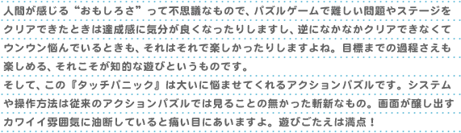
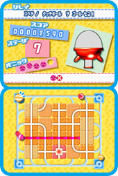
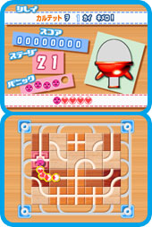
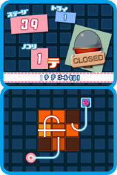
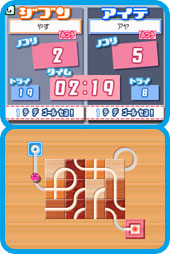

| |

|
爽やかなサンバ風BGMが流れるオープニングのあと、オートデモがスタートしてゲームの遊び方を説明してくれます。これは親切ですね。フムフム……ようはピンク色のパニックボールをゴールまで導けばクリアと。そして、ゴールまでのルートは画面をタッチして床のパネルをスライドさせることで作ればいい……なるほど思っていたよりカンタンかも！ タイトルに戻って“ひとりでプレイ”→“クリアでモード”→“やさしい”にまずはチャレンジしてみます。最初のステージなのでルートも単純です。パニックボールは順調にゴール地点へ。楽勝でクリアかと思ったら、いきなり「ダメじゃ〜ん」の声が聞こえてきました。ニンテンドーDSの上画面を見るとパニックボールの残り数が1つ減ってます！
えっ、ダメ？ というか語尾に「じゃん」？ じつはさきほどのオートデモにはまだ続きがあって、パニックボールにタッチボールというものを複数連結させてからゴールしないとダメみたい。しかもゴール時にタッチボール同士がトリックと呼ばれる特定の並び方をしていないとアウト、さらにオジャマボールという触れちゃいけないキャラも登場、パネルの動かし方はスライドの他にターンもある……なかなか最初におぼえるルールが多いです。それぞれのボールは色々な方向へ勝手に動いているので、プレイ中は画面全体を気にしないといけない。ついつい慌ててしまいます。でもね、ここでくじけると思いますか？ ふふふ、まったく逆です。これこそ思考派ゲームが持つ魅力の1つ。いや、むしろコレを乗り越えていかないと楽しくない。
そのあとも何回か「ダメじゃ〜ん」と怒られながらプレイを続けていくと、だんだんとコツがつかめてきました。まずゲームがスタートしたらゴールのあるパネルを他のルートから切り離す。そしてパニックボールが進むルートだけはピンクで表示されるので、そのルートへタッチボールを合流させるようにパネルを操作していくのが基本みたい。 そして“クリアでモード”に関しては制限時間は無いので、パニックボールの進むルートがゴールにつなっがていないかぎりは画面を見ながらじっくりと考えればいいわけです。このコツをおぼえていく過程がとっても気持ちいいです。余裕が出てくると複数のボールがリアルタイムで動いているにぎやかな画面も冷静に見れるようになります。この時点で気付いたのが、ルール設定は少し複雑だけど操作方法自体は画面をタッチしてパネルを動かすだけで成立しているということ。かなり考え抜かれたゲームシステムという印象です。 |
|
タッチボールを特定の順番に並べて完成させるトリックは50種類近くあって、慣れてくると今回はどんなトリックを決めようか考えるのが楽しくなる。「ダメじゃ〜ん」ばかり言われていたのが、ついに「うまいね〜」なんてホメ出しましたよ。用意されたモードはなかなか多彩です。制限時間内でスコアアタックもできる上級者向けの“スコアでモード”や詰め将棋感覚で手軽に楽しめる“といてモード”などが用意されています。まずはゲームになれるという意味でも“といてモード”から始めるのも手かもしれません。
いくつかトリックを出せるようになったら今度は対戦モードもチェックしてみます。やはりここはWi-Fi対戦でしょう。対戦時には4種類のルールを選べるのがいいですね。まずはウォーミングアップ代わりに“といてモード”のシステムを使った“といてでバトル”に挑戦。対戦中は相手のプレイ画面は見えないんですけど、進行具合は上画面でわかります。ミスしている回数なんかも表示されて少し恥ずかしい。「相手は自分よりも先のステージへ進んでいるけど、ミスの総数はこちらの方が少ないぜ。よって正解率ならこっちが上！」なんて、負けている自分を妙に納得させてみたり（笑）。まだ発売して間もないタイトルなので、プレイヤー同士のスキルもそれほど差がついていないような状況みたい。勝ったり負けたり、タップリと楽しめました。
Wi-Fi対戦で他のプレイヤーとのトリック披露合戦（自慢話ともいう）を続けていくと、さらにコツがつかめてきました。フィールドの周囲にある動かせないパネル上ではボールのスピードが遅くなります。ここをうまく利用するのが大切かも。また困り者のオジャマボールはゴールに入ると消えるので、こちらからゴールのあるパネルを接近させればいいわけです。さらに難度の高いトリック（つながったタッチボールの数が多い）を決めたい時はパニックボールにタッチボールをつなげたら、いったん周回するルート内に閉じ込めて次のタッチボールのつなぎかたを考えるのがオススメ。トリックを完成させたのち、長々とつらなるボールたちをゴールへ一気にダッシュさせるときは最高の開放感ですよ！ ぜひ試してみてほしいです。 |
|
|